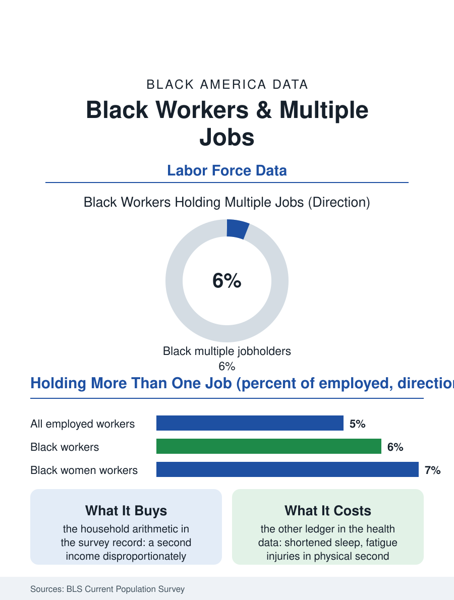

Black Employment
The Second Shift: Black Workers and Multiple Jobs
About five in a hundred workers hold more than one job, and Black workers, Black women most of all, run above the line. The moonlighting file.

The second job is an American institution with a long Black history. The Bureau of Labor Statistics counts multiple jobholders every month, roughly five of every hundred employed workers in a typical recent year, and Black workers run at or slightly above that line, stitching together shifts, gigs, and side businesses around a main job that does not cover the month. This article reads the moonlighting file, the ledger of the hours after the hours.
Who Holds More Than One Job
The Current Population Survey's profile of the multiple jobholder is more varied than the stereotype. Women hold second jobs at higher rates than men; Black women are among the most likely of any group in the survey to report more than one employer. The combinations tell the economic story: a full-time weekday job paired with weekend retail or care work, a salaried post paired with rideshare evenings, two part-time jobs that never sum to the benefits of one full-time position. Education sorts the phenomenon in two directions at once. College-educated workers moonlight for opportunity, the consultancy, the adjunct course, the rental renovated on weekends, while workers without degrees moonlight for arithmetic, the rent equation that one paycheck cannot solve. The survey counts jobs, not hours, so the file understates intensity: a worker holding one full-time job and driving twenty hours a week appears identically to an academic with a single evening seminar. Occupation data sharpen the picture, with care work, food service, protective service, and education all feeding workers into second jobs at elevated rates, the common thread being first jobs whose wages sit below the cost of the households they support.
The Side Business Border
The survey's clean categories blur exactly where Black workers are most active. The self-employment file in this atlas records the rise of the side business, the braiding studio, the catering weekend, the resold vintage, the tax-season practice run from a kitchen table beside a payroll job. Federal statistics file much of this as single-job self-employment or miss the informal edge entirely, so the true prevalence of combined work among Black households runs above the published line. The motivations recorded in the small-business surveys are layered: supplemental income first, but close behind it the ownership ambition, the side business as the seed of the main business, and insurance, the knowledge that a second income answers a layoff differently than savings alone can. The pandemic rearranged the file without shrinking it: remote main jobs made second work logistically easier for the professional tier, while the service tier's second jobs became the gig platforms' flexible shifts, app-scheduled and benefit-free. Researchers tracking total work hours by race find the combined picture, paid hours across all jobs, shows Black workers, and especially Black mothers, carrying workweeks at or above the national average, a datum that sits quietly beside the wealth data and explains part of each other.
What the Second Job Buys and Costs
The returns are real and so is the bill. Household budget analyses find second-job income disproportionately assigned to the obligations that build or protect position: rent in safer neighborhoods, children's schooling costs, debt payments, the down-payment fund. As an income-smoothing device it is unmatched, no application, no credit check, just hours the worker already owns. The costs arrive in the health file's vocabulary: sleep shortened at both ends, the second shift ending near midnight before a first shift at dawn; injury risk rising with fatigue in the physical second jobs; and the tax and benefits friction of work that no single employer sees whole, so no employer accommodates it. Policy discussion in the file runs to the scheduling layer, predictable-hours laws, portable benefits that follow the worker across gigs, and the minimum wage arithmetic that decides how many households need the second job at all. The moonlighting file closes with the survey's most human table: asked why they hold multiple jobs, workers answer in the language of both ambition and necessity, to earn more, to meet expenses, to build something, to enjoy the work. For Black households the answers concentrate at the necessary end, which makes the second job less a hustle to celebrate than a measurement, taken monthly by the government itself, of the distance between one job's pay and one family's life.
More in Black Employment
The Black Unemployment Rate: The Two-to-One Pattern
Black unemployment runs at roughly twice the White rate — 5.5 percent against 3.3 percent in annual averages — a ratio stable across five decades of federal data. How it is measured and why it persists.
Black Median Weekly Earnings: The 80-Cent Ratio
Black full-time workers earn a median of about $900 a week — roughly 80 cents for every dollar White workers earn. The BLS earnings data by group, gender, and occupation.
Black Labor Force Participation: Working at National Rates
Black labor force participation runs at roughly the national rate — and Black women participate at higher rates than White women. The BLS participation data.
Source: U.S. Bureau of Labor Statistics, Current Population Survey, multiple jobholder statistics; Federal Reserve household economics surveys.